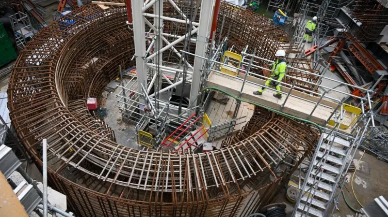
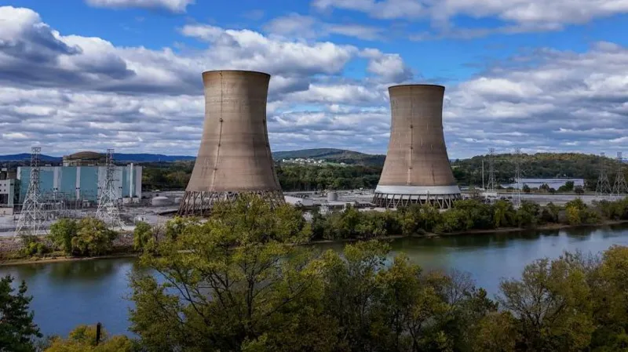

Environment
Is nuclear power gaining new energy?

A decade ago, it seemed as though the global nuclear industry was in an irreversible decline.
Concerns over safety, cost, and what to do with radioactive waste had sapped enthusiasm for a technology once
seen as a revolutionary source of abundant cheap energy.
Yet now there is widespread talk of a revival, fuelled by tech giants Microsoft, Google and Amazon all
announcing investments in the sector, as well as the growing pressures on wealthy nations to curb their carbon
emissions.
But how real is the comeback?
When commercial nuclear power was first developed in the 1950s and 1960s, governments were seduced by its
seemingly unlimited potential.
Nuclear reactors could harness and control the same awesome forces released by atomic bombs - to provide
electricity for millions of homes. With a single kilogram of uranium yielding some
20,000 times as much energy
as a kilogram of coal, it seemed like the future.
But the technology also inspired public fear. And that fear seemed to be justified by the Chernobyl disaster,
which spread radioactive contamination across Europe in early 1986.
It fuelled widespread public and political opposition – and slowed the growth of the industry.
Another accident, at the Fukushima Daichi plant in
Japan in 2011, re-energised concerns about nuclear
safety.
Japan itself shut down all of its reactors in the immediate aftermath, and only 12 have since
restarted.
Germany decided to phase out nuclear power altogether. Other countries scaled back plans to invest in new power
plants, or extend the lives of ageing facilities.
According to the International Atomic Energy Agency, this led to the loss of 48GW of electric
power generation
globally between 2011 and 2020

A simple guide to climate change
Why does keeping global warming to 1.5C
matter?
What is COP29 and how will Trump’s election affect the
climate talks?
But hunger for clean power is not just coming from governments. Technology giants are striving to develop more
and more applications that use artificial intelligence.
Yet AI relies on data – and data centres need constant, reliable electricity. According to Barclays Research,
data centres account for 3.5% of electricity consumption in the US today, but that figure could rise to more
than 9% by the end of the decade.
In September, Microsoft signed a 20-year deal to buy power from Constellation Energy, which will lead to the
reopening of the infamous Three Mile Island power station in Pennsylvania – the site of the worst nuclear
accident in US history, where a reactor suffered a partial meltdown in 1979.
Despite its tainted public image, another reactor at the plant continued to generate electricity until 2019.
Constellation’s chief executive Joe Dominguez described the deal to reopen it as a powerful symbol of the
rebirth of nuclear power as a clean and reliable energy resource
.
Other tech giants have taken a different approach. Google plans to buy energy produced from a handful of
so-called Small Modular Reactors or SMRs – a nascent technology intended to make nuclear energy easier and
cheaper to deploy. Amazon is also supporting SMR development and construction.
SMRs themselves are being promoted, in part, as a solution to one of the biggest drawbacks facing nuclear power
today. In western nations, new power stations have to be built to exacting modern safety standards. This,
cobined with their sheer scale, makes them prohibitively expensive and complicated to build.
Hinkley Point C is a good example. Britain’s first new nuclear power station since the mid-1990s is being built
on a stretch of remote coastline in southwest England.
It is meant to be the first of a batch of new plants to replace the country’s ageing reactor fleet. But the
project is running some five years behind schedule and will cost up to £9bn ($11.5bn) more than
planned.
It is not an isolated case. The US’s newest reactors at Plant Vogtle in Georgia opened seven years late, and
cost more than $35bn – well over double their original budget.
SMRs are designed to solve this problem. They will be smaller than traditional reactors, using standardised
parts that can be assembled quickly, at sites close to where the power is needed.
But while there are some 80 different designs under development globally, according to the International Atomic
Energy Agency, the concept has yet to be proven commercially.

Opinions about nuclear power remain highly polarised. Supporters claim the technology is indispensable if
climate targets are to be reached. Among them is Rod Adams, whose Nucleation Capital fund promotes investment in
nuclear technology.
“Nuclear fission has a seven-decade history showing it is one of the safest power sources available," he
explains.
“It is a durable, reliable source of power with low ongoing costs already, but capital costs have been too high
in Western countries."
Opponents though, insist nuclear power is not the answer.
According to Professor M.V. Ramana of the University of British Columbia, it is “a folly to consider nuclear
energy as clean”. It is, he says, "one of the most expensive ways to generate electricity. Investing in cheaper
low-carbon sources of energy will provide more emissions reductions per dollar."
If current trends do herald a new nuclear age, one old problem remains. After 70 years of atomic power, there is
still disagreement over what to do with the accumulated radioactive waste - some of which will remain hazardous
for hundreds of thousands of years.
The answer being pursued by many governments is geological disposal - burying the waste in sealed tunnels deep
underground. But only one country, Finland, has actually built such a facility, while environmentalists and
anti-nuclear campaigners argue that dumping waste out of sight and out of mind is simply too risky.
Solving that conundrum may be a key factor in dictating whether there really will be a new age of nuclear power.
<< Back